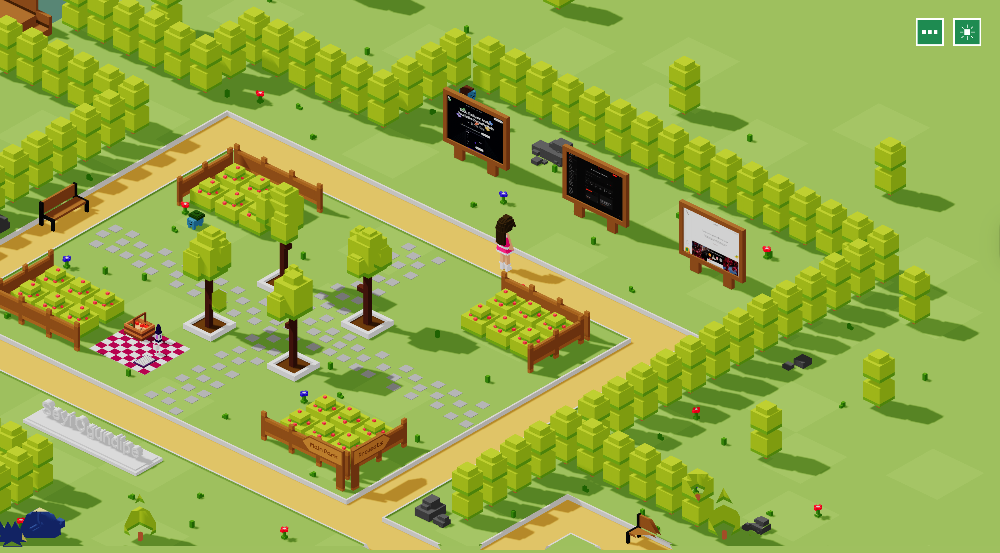
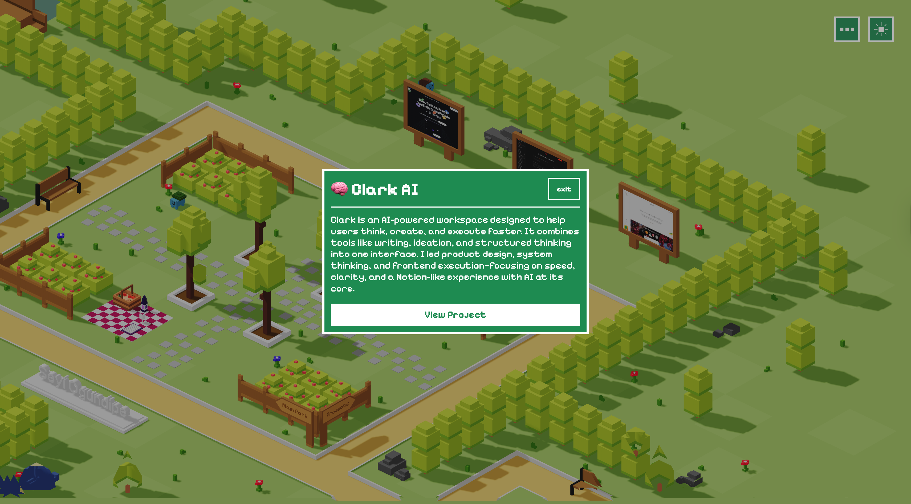

03Case Study
A browser-based 3D world built in Three.js — visitors move through space instead of scrolling a page. Two worlds inside one scene: an isometric park to explore, and a first-person gallery of work within.
Most portfolios are read. This one is walked. I set myself a brief: turn navigation into spatial exploration — prove a real-time 3D scene could load fast and feel good on a phone. Two worlds coexist in one Three.js scene: a bright isometric park to wander, and a first-person gallery inside the buildings.
No list of links. Just a world to discover.


Greybox the space
Blocked the world with primitives to test scale, sightlines, and the feel of movement before committing to any art direction.
Controls & camera
Tuned the camera rig and input until walking felt intuitive on both keyboard and touch — the world teaches itself in the first three seconds.
Light & mood
Layered materials and lighting to give the park warmth — inviting and lived-in — without blowing the frame budget.
Optimise & ship
Profiled draw calls, compressed assets, deployed to Vercel. First paint doesn't punish mobile visitors.
Three.js handled the scene graph, camera, and render loop. Inside the park: an isometric walkable world. Inside buildings: a first-person gallery with photo spheres, artwork rooms, and an in-world video screen — all the same Three.js scene, no transitions.
The work was in the budget — managing draw calls, geometry, and texture weight so the experience stayed smooth across devices.